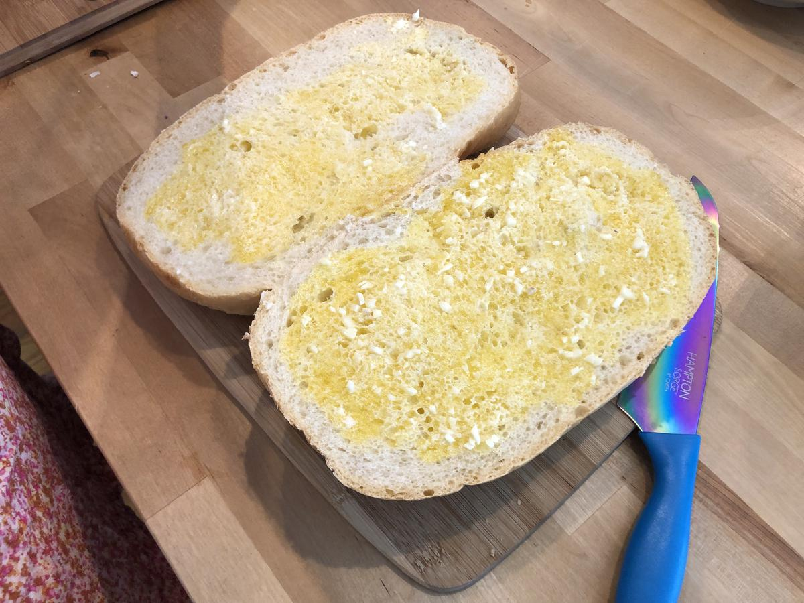

Based on https://www.simplyrecipes.com/recipes/garlic_bread/ and https://www.washingtonpost.com/recipes/triple-garlic-bread/17638
Personal rating: 4 / 5

~2-4 Garlic Cloves, grated or very finely diced to a paste
~2-4 Tbsp butter
~2 Tbsp Extra-virgin Olive Oil
1/2 tsp kosher salt
Bread Loaf
~3 Tbsp Cheese, grated
Position rack in middle to upper third of the oven. Preheat to 400F
Combine everything except for the cheese in a microwave safe bowl and microwave until liquid (1 min + ~15s intervals)
Spread evenly on each half and top with cheese
Bake for 10-15 min until golden and crispy
Slice and serve